Про кухню Китаю
Китайська кухня дуже різноманітна, з багатьма регіональними стилями, серед яких виділяються сичуанська, кантонська, хунаньська та інші. Вона використовує широкий спектр інгредієнтів, таких як рис, локшина, соєві продукти, м'ясо та морепродукти. Популярні страви включають пекинську качку, смажену локшину та різноманітні страви на пару, зокрема баоцзи (булочки з начинкою) та дімсам. Багато страв мають пікантний, кисло-солодкий або гострий смак.
Виберіть країну
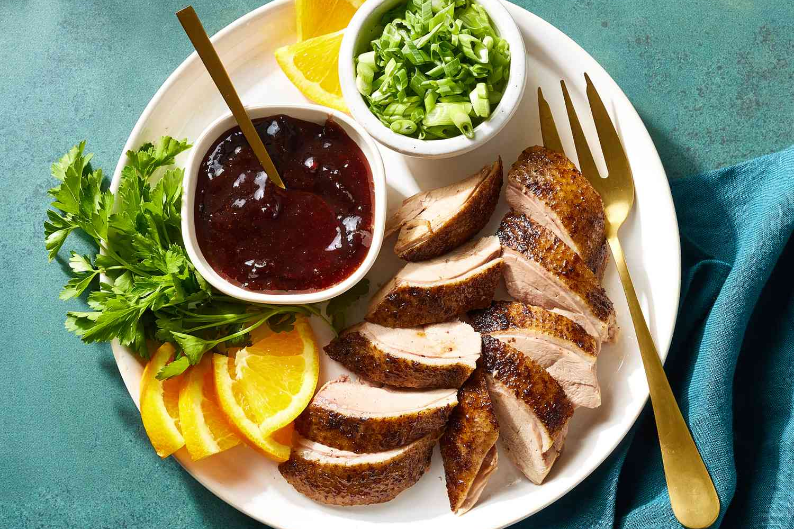
Пекінська качкаЗнаменита китайська страва, де качка смажиться до хрусткої скоринки, подається з млинцями, овочами і соусом.

Кисло-солодка свининаСтрава зі свинини в клярі, смажена з кисло-солодким соусом на основі оцту та цукру, з додаванням ананаса та овочів.
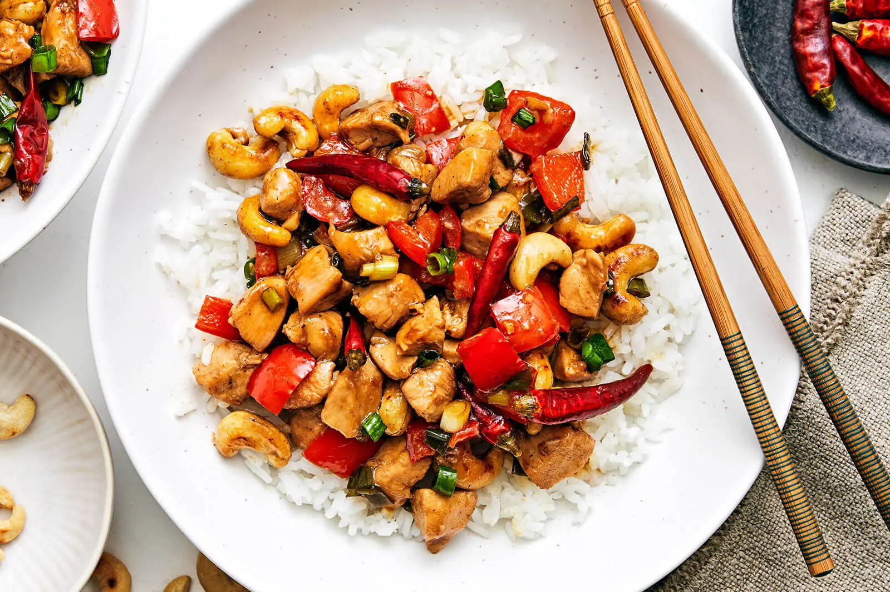
Курка Кунг ПаоГостра смажена страва з курки з арахісом, овочами та перцем чилі, заправлена соєвим соусом і часником.

Чар сіуСмажена свинина в маринаді з меду, соєвого соусу та спецій, що надають м’ясу характерний солодко-солоний смак і карамельну скоринку.
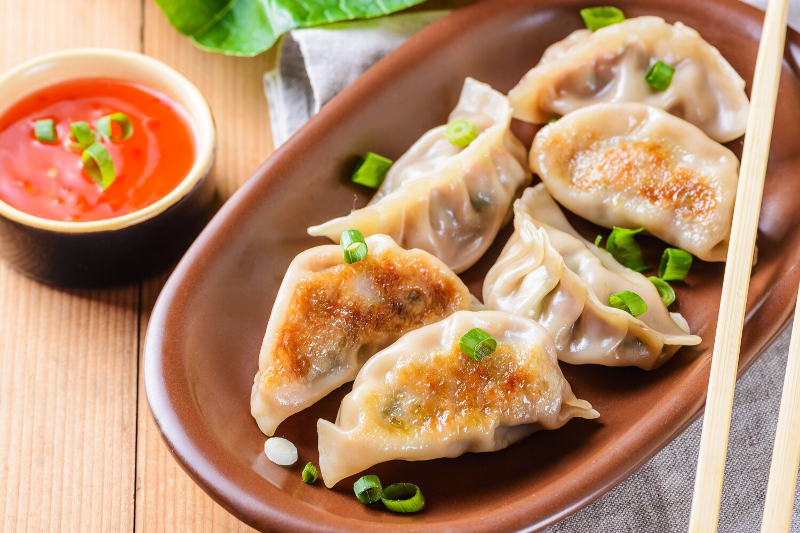
ЦзяоцзиКитайські пельмені з різними начинками, такими як свинина, яловичина чи овочі, варяться або смажаться.
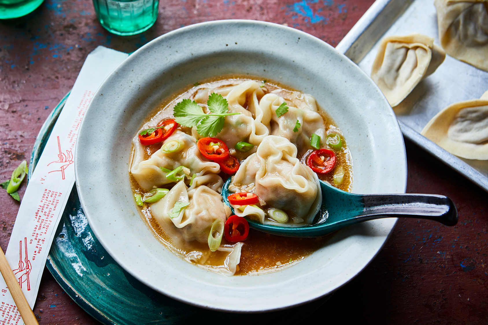
ВонтониТонкі пельмені, зазвичай з начинкою з м'яса чи креветок, які подають у бульйоні або обсмажують.
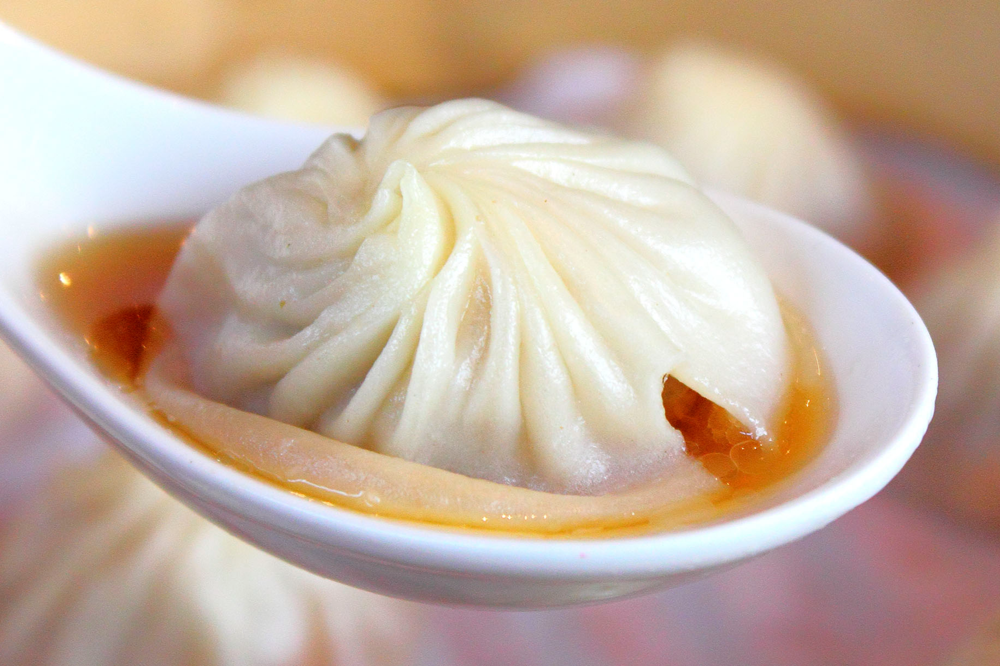
СяолунбаоМаленькі пельмені з начинкою з м'яса або морепродуктів, заповнені гарячим бульйоном, які подаються на пару.
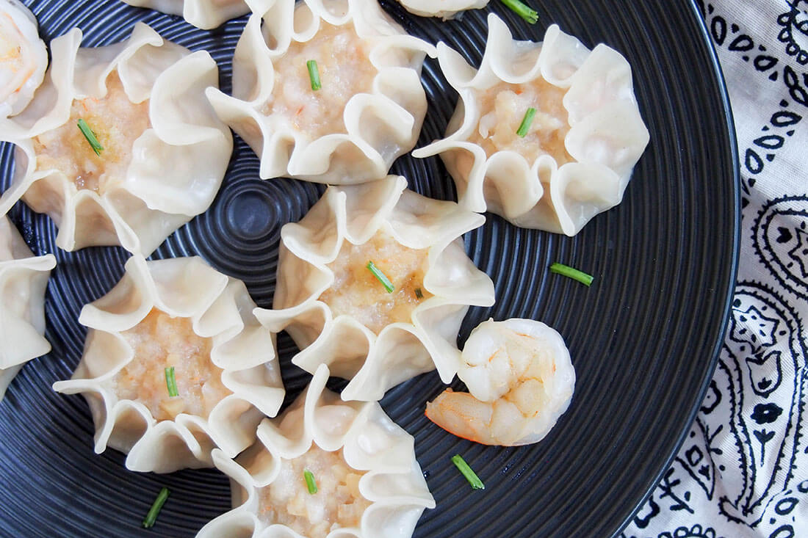
ШумайВідкриті парові пельмені, зазвичай з начинкою з м'яса, креветок і грибів, популярні в дімсам-меню.
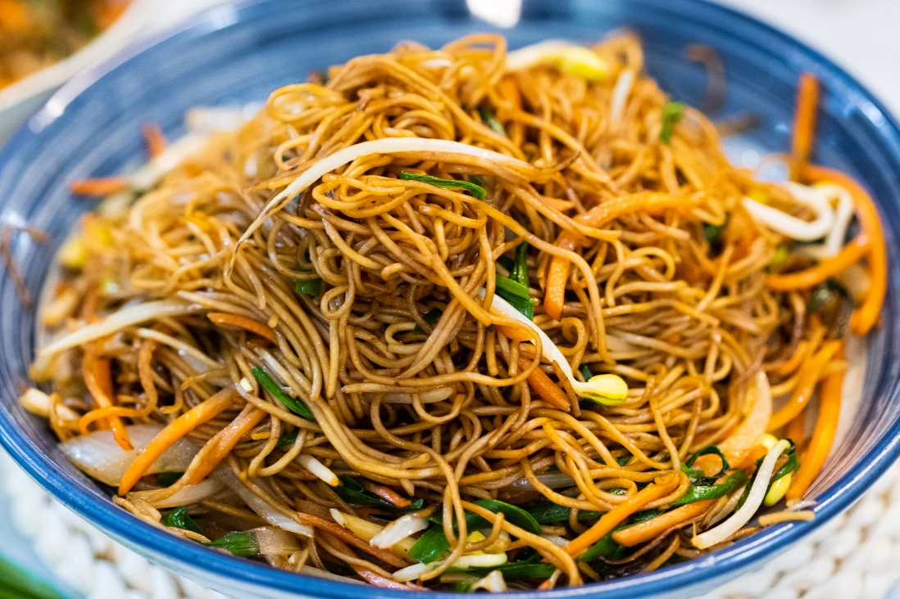
Чоу мейнСмажена локшина з овочами, м'ясом або морепродуктами, заправлена соєвим соусом і спеціями.
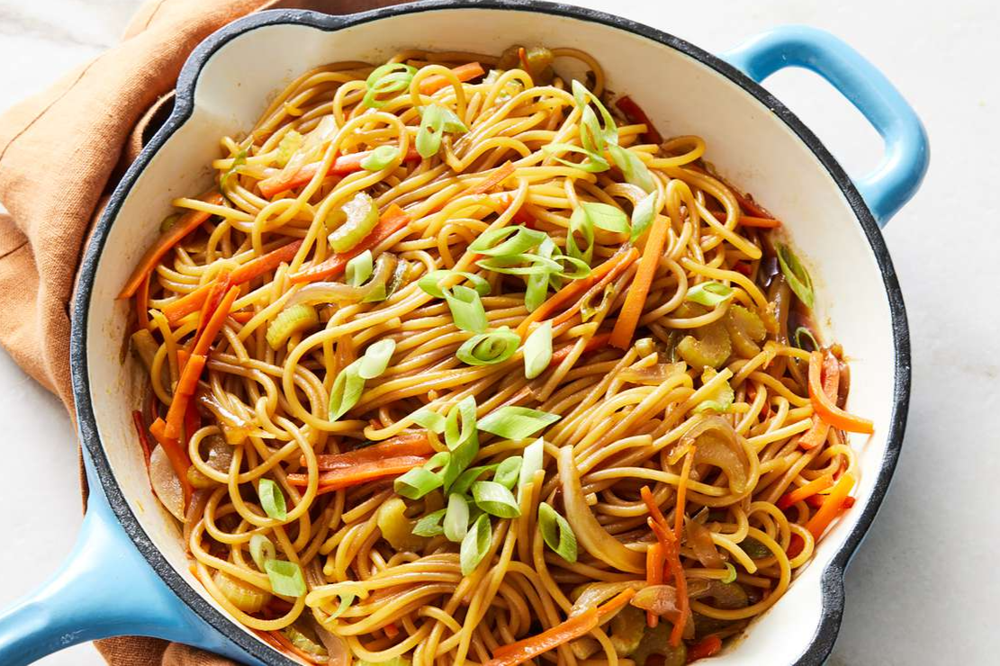
Ло мейнВарена локшина, яка подається з овочами та м'ясом у соєвому або устричному соусі.
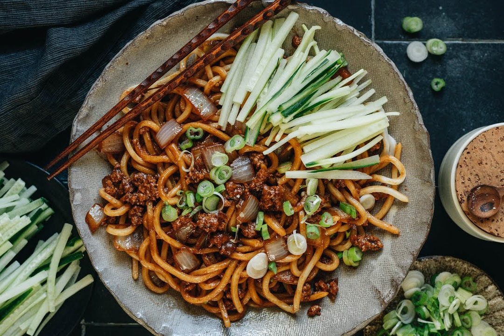
ЧжацзянмяньСтрава з товстої локшини, заправленої густим соусом з ферментованої соєвої пасти, м'яса та овочів.
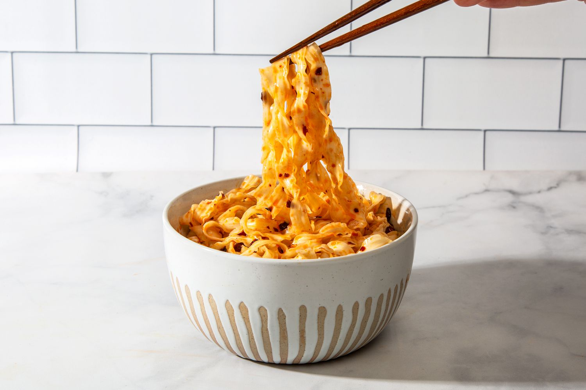
Дао сяо мяньТовста локшина ручного приготування, яка нарізається ножем прямо в киплячу воду або суп.

Гостро-кислий супТрадиційний суп з тофу, грибами, яйцем і свининою, заправлений оцтом і перцем для гостро-кислого смаку.

Ґох'яо мійсяньЗнаменита страва з Юньнаню: тонка локшина подається у гарячому бульйоні з різними начинками.

Суп із локшиною та яловичиноюАроматний бульйон з яловичиною, пшеничною локшиною, зеленню та прянощами, з насиченим і пікантним смаком.

Локшина ВонтонСуп з тонкою локшиною і пельменями вонтон, часто з курячим бульйоном і овочами.
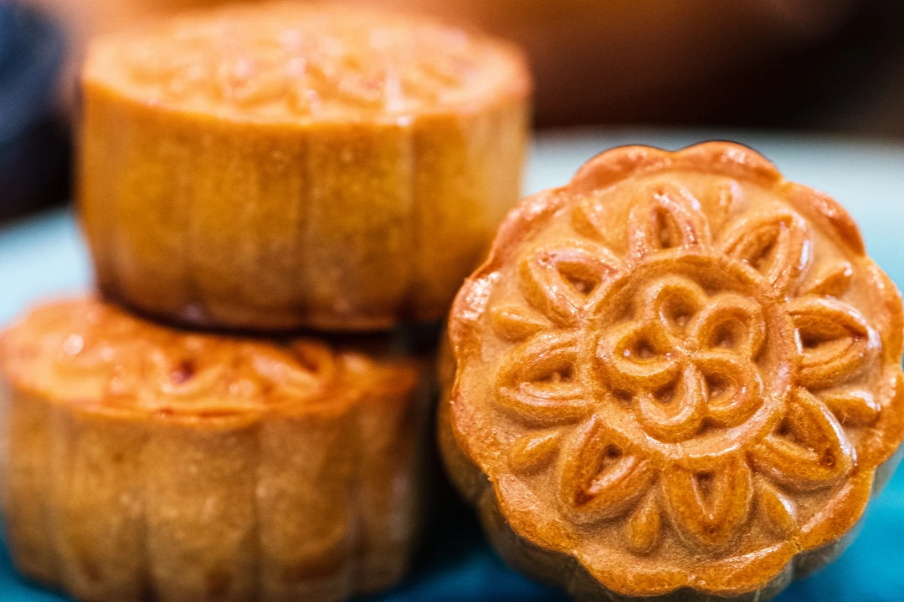
МункейкТрадиційна китайська випічка з щільною начинкою з бобової пасти, жовтків або лотосу, популярна під час Свята середини осені.
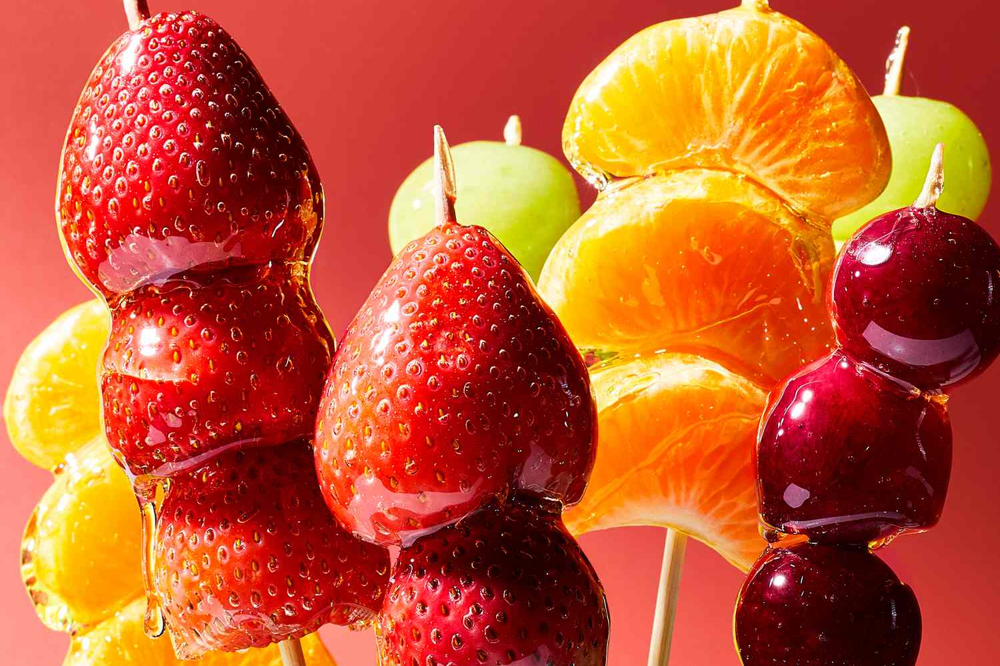
ТанхулуКитайський десерт, що складається з зацукрованих фруктів, найчастіше глоду, нанизаних на паличку.
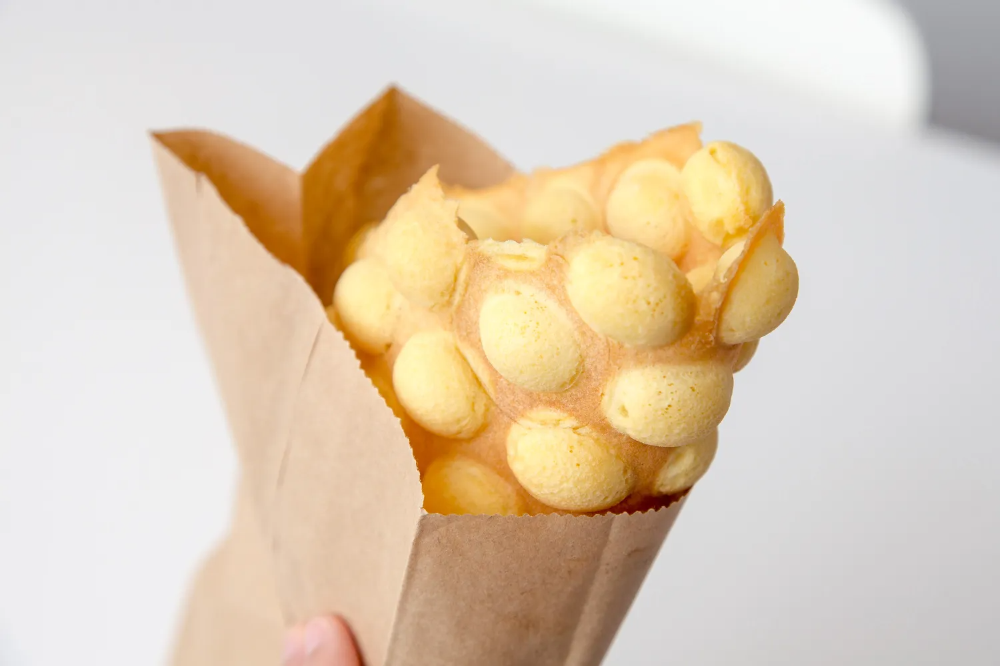
Гонконзькі вафліВеликі круглі вафлі з пухирцями, які подаються гарячими, іноді з різними начинками або топінгами.

Бабл-тіНапій на основі чаю з додаванням молока і тапіоки, відомий своїми жувальними перлинками на дні склянки.